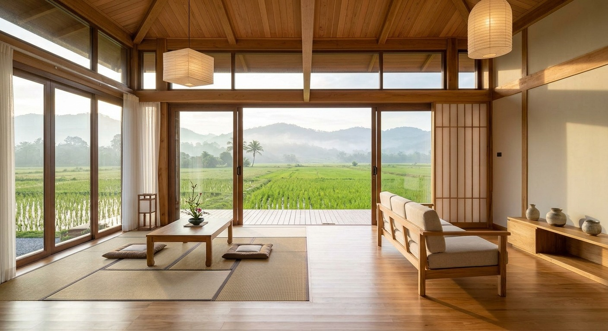

Modern Japanese & Cozy Homestay Tepi Sawah
Ketenangan & Keselesaan Kumpulan di Kulim
Sewa seluruh rumah dengan 5 bilik tidur berkonsepkan Japandi di tepi sawah padi. Privasi penuh untuk 10–15 tetamu, sesuai untuk keluarga & rombongan korporat Kulim Hi-Tech Park.
Suasana Ruang Tamu & Pemandangan Sawah
Ruang santai bertema Japandi dengan sentuhan kayu semula jadi dan pemandangan terbuka ke sawah padi.

Sewa Seluruh Rumah
Privasi 100% tanpa berkongsi dengan tetamu lain. Ruang tamu & makan yang amat luas.
15 Minit ke KHTP
Akses pantas ke Kulim Hi-Tech Park & 35 minit ke Pusat Rekreasi Sungai Sedim.
Pemandangan Padi & Japandi
Suasana tenang berunsurkan kayu oak, rona bumi, dan keindahan sawah padi.
Parkir Luas & Selamat
Muat untuk 3 hingga 4 buah kenderaan di kawasan halaman berpagar.